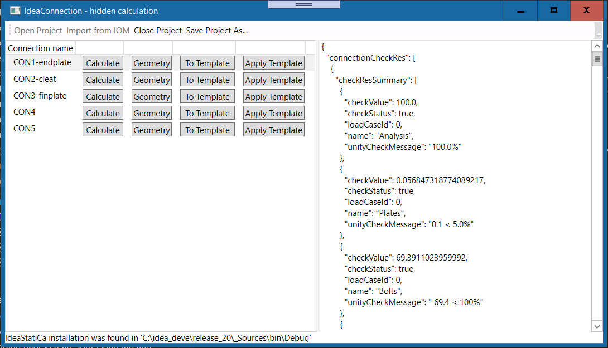
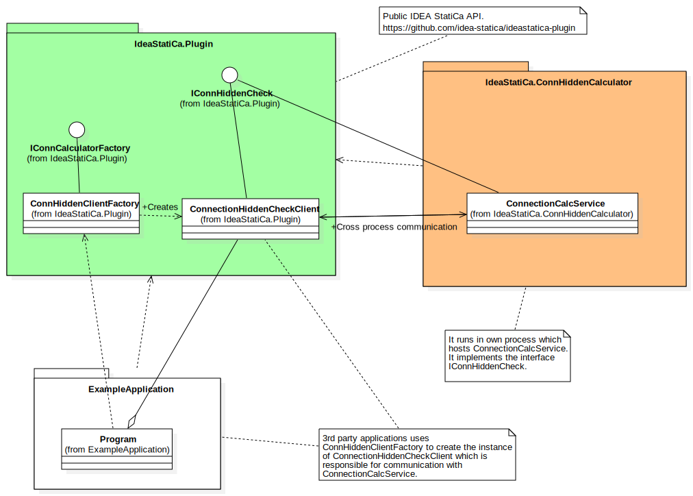
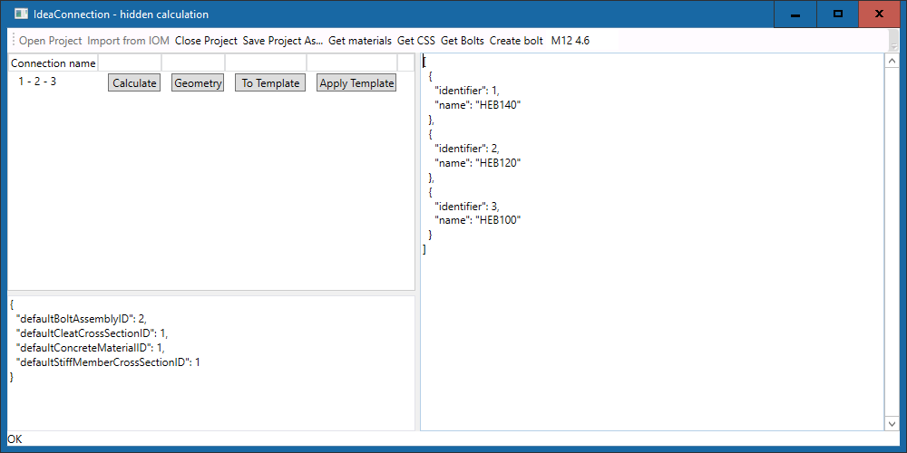
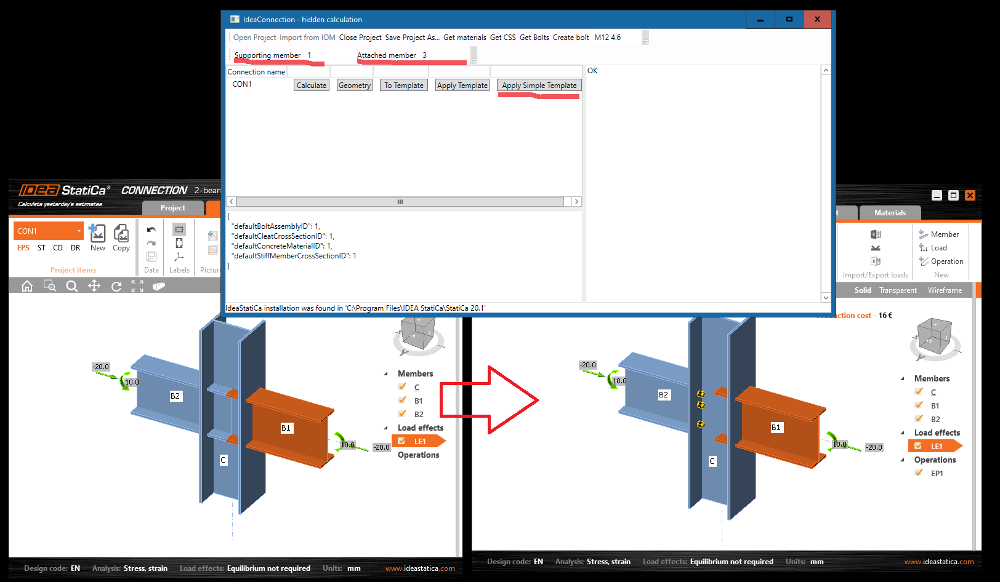

ConnectionHiddenCalculation
It is more complex example which presents more features which are provided by IDEA StaiCa API. To be able to run this example set the path to Idea StatiCa directory in the project settings.

Communication of a 3rd party application (the example ConnectionHiddenCalculation in this case) with ConnectionCalcService which runs in a another process. 
In the project IdeaStatiCa.ConnectionClient there are commands which control @"IdeaStatiCa.Plugin.IConnHiddenCheck" Service. These commands show how to :
- Open IDEA Connection project
- Import IDEA Connection from IOM
- Close IDEA Connection project
- Calculate a connection
- Get geometry of a connection
- Create template from a connection
- Apply template
- Delete all operations from the connection
There are new methods for getting information about materials, cross-sections and bolt assemblies in idea connection project in IConnHiddenCheck since version IDEA StatiCa v20.0.81. It is also possible to add new bolt assemblies into a connection project - see method :
/// <summary>
/// Add the new bolt assembly. Its type is defined by its name (e.g. 'M12 4.6')
/// </summary>
/// <param name="boltAssemblyName"></param>
/// <returns></returns>
[OperationContract]
int AddBoltAssembly(string boltAssemblyName);
The method ApplyTemplate has the new parameter connTemplateSetting. It defines materials which are used when template is applied.

The examples of using these new IConnHiddenCheck methods can be found in examples :
Improvements in version IDEA StatiCa v 20.1
API users can apply simple template to a connection.

There is the example how to call the service in the command : Apply Simple template
/// <summary>
/// Apply the simple connectionsimple template from file <paramref name="templateFilePath"/> on connection <paramref name="connectionId"/>
/// </summary>
/// <param name="connectionId">The id of the connection on which templete will be applied</param>
/// <param name="templateFilePath">The path to the connection template</param>
/// <param name="connTemplateSetting">The additional settings - e.g. default bolts</param>
/// <param name="mainMember">Main (supporting member)</param>
/// <param name="attachedMembers">The list of members which are supported by <paramref name="mainMember"/></param>
/// <returns>Returns 'Ok' in case of the success otherwise 'Fail'</returns>
[OperationContract]
string ApplySimpleTemplate(string connectionId, string templateFilePath, ApplyConnTemplateSetting connTemplateSetting, int mainMember, List<int> attachedMembers);
How to test applying single template step by step
- Build project ConnectionHiddenCalculation
- Open the empty connection project 2-beams-to-column-empty.ideaCon in app ConnectionHiddenCalculation
- Specify supporting member (in this cas 1) and supported member (in this case 2)
- Click on the button Apply simple template
- Save project as and open it in ideaconnection.exe to check the result
- You can apply template twice - for member 2 anb 3 to get the complete connection
There is the online API Documentation of manufacturing operations. It helps to set values of properties of operations. The best way is to create a connection model in ideaconnection.exe - save is as connection template - you can find this feature in this example. Then open it in a text editor and check the content. Then you can modify values in contemp file and apply it again.
Improvements in version IDEA StatiCa v 21.0
We added the method GetAllConnectionData to our API interface IConnHiddenCheck. This method returns the instance of IdeaRS.OpenModel.OpenModelTuple for a selected connection. This instance includes structural data and corresponding results of FE analysis.